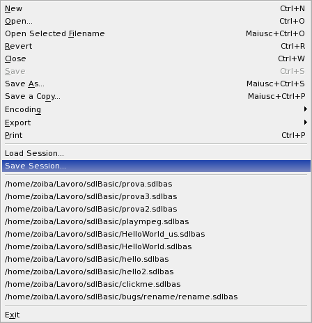

セッション
カレントに開いたバッファーをセッションとして次に速やかに開くためにセットとして保存することができます。
セッションファイルは".ses"というイクステンションのプレーンテキストとして保存されます。
Use File | Load Session and File | Save Session to load/save sessions.

一度保存した場合現在のバッファーを閉じたしても、セッションの編集結果が失われることはありません。
結果を保存していないバッファーの場合は保存するかどうか尋ねられます。